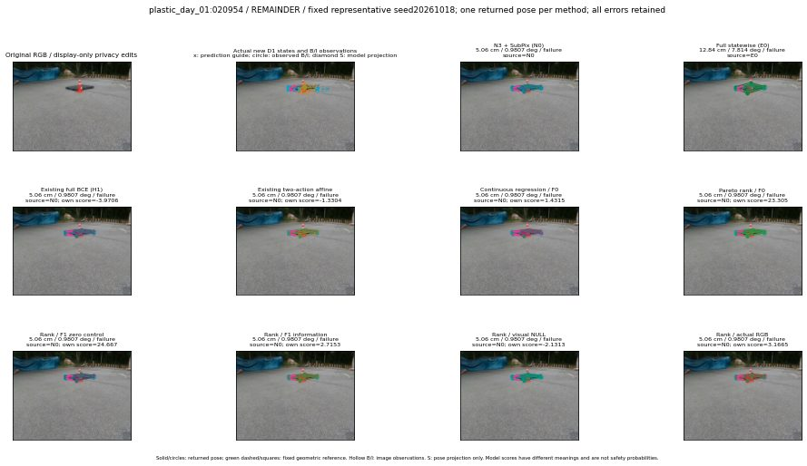

실선은 반환 자세, 초록 점선은 고정 기하 참조입니다. S는 영상 관측이 아닙니다. 점수는 모델별 의미가 다르며 보정된 안전 확률이 아닙니다. 개인정보 처리는 표시 사본에만 적용했습니다.
| 방법·seed | 위치 / 회전 / 공동성공 | 실제 출처 | 선택 후보 | 각 모델 자체 점수 |
|---|---|---|---|---|
| N0 | 5.06 cm / 0.9807 deg / failure | N0 | N/A | N/A |
| E0 | 12.84 cm / 7.814 deg / failure | E0 | N/A | N/A |
| E0_REGENERATED | 12.84 cm / 7.814 deg / failure | E0 | E0_REGENERATED | N/A |
| POSEFIX_SUBPIX_PF_ANCHOR | 29.67 cm / 80.47 deg / failure | OTHER | N/A | N/A |
| POSEFIX_SUBPIX_YOLO_ANCHOR | 29.67 cm / 80.47 deg / failure | OTHER | N/A | N/A |
| D1_H1_MLP_s20261018 | 5.06 cm / 0.9807 deg / failure | N0 | N0 | -3.970592737197876 |
| D1_H1_MLP_s20261019 | 5.06 cm / 0.9807 deg / failure | N0 | N0 | -3.8325722217559814 |
| D1_H1_MLP_s20261020 | 5.06 cm / 0.9807 deg / failure | N0 | N0 | -3.9307515621185303 |
| D1_H1_PAIR_MLP_s20261018 | 5.06 cm / 0.9807 deg / failure | N0 | N0 | -2.1903648376464844 |
| D1_H1_PAIR_MLP_s20261019 | 5.06 cm / 0.9807 deg / failure | N0 | N0 | -2.439950704574585 |
| D1_H1_PAIR_MLP_s20261020 | 5.06 cm / 0.9807 deg / failure | N0 | N0 | -3.120710849761963 |
| D1_H1_PAIR_ROLE_AFFINE_s20261018 | 5.06 cm / 0.9807 deg / failure | N0 | N0 | -1.3304264545440674 |
| D1_H1_PAIR_ROLE_AFFINE_s20261019 | 5.06 cm / 0.9807 deg / failure | N0 | N0 | -1.3378517627716064 |
| D1_H1_PAIR_ROLE_AFFINE_s20261020 | 5.06 cm / 0.9807 deg / failure | N0 | N0 | -1.2879571914672852 |
| R_CONT_F0_s20261018 | 5.06 cm / 0.9807 deg / failure | N0 | N0 | 1.4315358400344849 |
| R_CONT_F0_s20261019 | 5.06 cm / 0.9807 deg / failure | N0 | N0 | 1.465588092803955 |
| R_CONT_F0_s20261020 | 5.06 cm / 0.9807 deg / failure | N0 | N0 | 1.4064284563064575 |
| R_ORDER_F0_s20261018 | 5.06 cm / 0.9807 deg / failure | N0 | N0 | 23.305320739746094 |
| R_ORDER_F0_s20261019 | 5.06 cm / 0.9807 deg / failure | N0 | N0 | 12.014179229736328 |
| R_ORDER_F0_s20261020 | 5.06 cm / 0.9807 deg / failure | N0 | N0 | -14.422964096069336 |
| R_ORDER_F1_ZERO_s20261018 | 5.06 cm / 0.9807 deg / failure | N0 | N0 | 24.666858673095703 |
| R_ORDER_F1_ZERO_s20261019 | 5.06 cm / 0.9807 deg / failure | N0 | N0 | 20.67861557006836 |
| R_ORDER_F1_ZERO_s20261020 | 5.06 cm / 0.9807 deg / failure | N0 | N0 | 13.673004150390625 |
| R_ORDER_F1_s20261018 | 5.06 cm / 0.9807 deg / failure | N0 | N0 | 2.715298891067505 |
| R_ORDER_F1_s20261019 | 5.06 cm / 0.9807 deg / failure | N0 | N0 | 3.877340078353882 |
| R_ORDER_F1_s20261020 | 11.3 cm / 81.24 deg / failure | OTHER | G10/SWAPPED_WD/endpoint/89 | -0.8317363262176514 |
| V_ORDER_NULL_s20261018 | 5.06 cm / 0.9807 deg / failure | N0 | N0 | -2.1313304901123047 |
| V_ORDER_NULL_s20261019 | 5.06 cm / 0.9807 deg / failure | N0 | N0 | -0.6196027398109436 |
| V_ORDER_NULL_s20261020 | 5.06 cm / 0.9807 deg / failure | N0 | N0 | 5.110274314880371 |
| V_ORDER_RGB_s20261018 | 5.06 cm / 0.9807 deg / failure | N0 | N0 | 3.166494846343994 |
| V_ORDER_RGB_s20261019 | 5.06 cm / 0.9807 deg / failure | N0 | N0 | -0.26319169998168945 |
| V_ORDER_RGB_s20261020 | 5.06 cm / 0.9807 deg / failure | N0 | N0 | -7.120684623718262 |